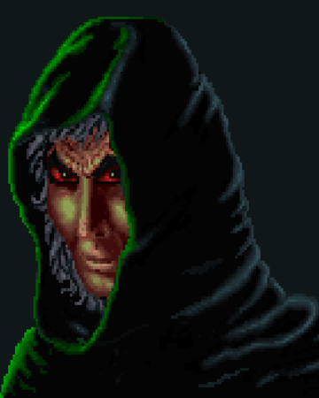

Chapter I: Arena
Short summary
Arena takes place on the continent of Tamriel, complete with wilderness, dungeons, cities and villages in a 6 million square mile play-space for the player, simulating the experience of a full continent. Although not as popular as the later games, Arena generated a cult following and was successful enough to spawn a popular sequel, Daggerfall.
The release year dates back to 1994, and the platform used was the old MS-DOS.
The plot
"It is said that hope flies on death's wings. Prepare then, for as the Elder Scrolls foretold, it will be here your adventure begins..."
Imperial Battlemage Jagar Tharn summoned both Emperor Uriel Septim VII and General Talin Warhaft on rumors of treachery. But Jagar Tharn betrays the two, and transports them into another dimension. Tharn's apprentice, Ria Silmane, witnesses his treachery and tries to warn the Elder Council, but is killed by Tharn, her corporeal form being destroyed by the Staff of Chaos. After months of planning, Jagar Tharn transforms himself into the image of the Emperor and takes the throne, summoning demon minions and transforming them into the Emperor's Guard, and sends a low-ranking member of the emperor's court into the Imperial Dungeons to die. Ria Silmane becomes an incorporeal form through the use of magic and remains in this world so that she can warn the prisoner of Jagar Tharn's treachery and that the Emperor is actually Jagar Tharn in disguise.
Ria creates a key for Talin to escape his cell and teleports him to another province through the use of a Shift Gate. The only way to stop Jagar Tharn is to obtain the Staff of Chaos, in which he holds his lifeforce. But the staff has been split by Tharn into eight pieces and scattered across Tamriel. Since Talin is the only one that Ria Silmane could trust, it is up to him to reassemble the pieces and defeat Jager Tharn.
Finally, in 3E 399, after a long quest to reassemble the pieces, which were hidden at the bottom of a dungeon in each province, the prisoner finally reassembles the Staff of Chaos. However, Jagar Tharn was not defeated as they and Ria Silmane had hoped. There was one final piece in the Imperial Palace, the jewel to the Staff, which would make it complete. The prisoner fought their way through the Imperial Palace to the basement level where he fought with Tharn. The prisoner touched the staff to the jewel and they formed instantly, melting Jagar Tharn. The staff creates a portal automatically to the dimension in which the Emperor and General Warhaft are being held. They fall out of the portal and thank the prisoner. The Emperor makes the prisoner the Eternal Champion as a reward for saving them and defeating Jagar Tharn.